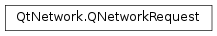

QNetworkRequest¶
Synopsis¶
Functions¶
- def
__eq__(other) - def
__ne__(other) - def
attribute(code[, defaultValue=None]) - def
hasRawHeader(headerName) - def
header(header) - def
maximumRedirectsAllowed() - def
originatingObject() - def
priority() - def
rawHeader(headerName) - def
rawHeaderList() - def
setAttribute(code, value) - def
setHeader(header, value) - def
setMaximumRedirectsAllowed(maximumRedirectsAllowed) - def
setOriginatingObject(object) - def
setPriority(priority) - def
setRawHeader(headerName, value) - def
setSslConfiguration(configuration) - def
setUrl(url) - def
sslConfiguration() - def
swap(other) - def
url()
Detailed Description¶
The
PySide2.QtNetwork.QNetworkRequestclass holds a request to be sent withPySide2.QtNetwork.QNetworkAccessManager.
PySide2.QtNetwork.QNetworkRequestis part of the Network Access API and is the class holding the information necessary to send a request over the network. It contains a URL and some ancillary information that can be used to modify the request.
-
class
PySide2.QtNetwork.QNetworkRequest(other)¶ -
class
PySide2.QtNetwork.QNetworkRequest([url=QUrl()]) Parameters: - other –
PySide2.QtNetwork.QNetworkRequest - url –
PySide2.QtCore.QUrl
Creates a copy of
other.Constructs a
PySide2.QtNetwork.QNetworkRequestobject withurlas the URL to be requested.- other –
-
PySide2.QtNetwork.QNetworkRequest.KnownHeaders¶ List of known header types that
PySide2.QtNetwork.QNetworkRequestparses. Each known header is also represented in raw form with its full HTTP name.Constant Description QNetworkRequest.ContentDispositionHeader Corresponds to the HTTP Content-Disposition header and contains a string containing the disposition type (for instance, attachment) and a parameter (for instance, filename). QNetworkRequest.ContentTypeHeader Corresponds to the HTTP Content-Type header and contains a string containing the media (MIME) type and any auxiliary data (for instance, charset). QNetworkRequest.ContentLengthHeader Corresponds to the HTTP Content-Length header and contains the length in bytes of the data transmitted. QNetworkRequest.LocationHeader Corresponds to the HTTP Location header and contains a URL representing the actual location of the data, including the destination URL in case of redirections. QNetworkRequest.LastModifiedHeader Corresponds to the HTTP Last-Modified header and contains a PySide2.QtCore.QDateTimerepresenting the last modification date of the contents.QNetworkRequest.CookieHeader Corresponds to the HTTP Cookie header and contains a QList<PySide2.QtNetwork.QNetworkCookie> representing the cookies to be sent back to the server.QNetworkRequest.SetCookieHeader Corresponds to the HTTP Set-Cookie header and contains a QList<PySide2.QtNetwork.QNetworkCookie> representing the cookies sent by the server to be stored locally.QNetworkRequest.UserAgentHeader The User-Agent header sent by HTTP clients. QNetworkRequest.ServerHeader The Server header received by HTTP clients.
-
PySide2.QtNetwork.QNetworkRequest.Attribute¶ Attribute codes for the
PySide2.QtNetwork.QNetworkRequestandPySide2.QtNetwork.QNetworkReply.Attributes are extra meta-data that are used to control the behavior of the request and to pass further information from the reply back to the application. Attributes are also extensible, allowing custom implementations to pass custom values.
The following table explains what the default attribute codes are, the
PySide2.QtCore.QVarianttypes associated, the default value if said attribute is missing and whether it’s used in requests or replies.Constant Description QNetworkRequest.HttpStatusCodeAttribute Replies only, type: QMetaType.Int(no default) Indicates the HTTP status code received from the HTTP server (like 200, 304, 404, 401, etc.). If the connection was not HTTP-based, this attribute will not be present.QNetworkRequest.HttpReasonPhraseAttribute Replies only, type: QMetaType.QByteArray(no default) Indicates the HTTP reason phrase as received from the HTTP server (like “Ok”, “Found”, “Not Found”, “Access Denied”, etc.) This is the human-readable representation of the status code (see above). If the connection was not HTTP-based, this attribute will not be present.QNetworkRequest.RedirectionTargetAttribute Replies only, type: QMetaType.QUrl(no default) If present, it indicates that the server is redirecting the request to a different URL. The Network Access API does not by default follow redirections: the application can determine if the requested redirection should be allowed, according to its security policies, or it can set to true (in which case the redirection will be followed and this attribute will not be present in the reply). The returned URL might be relative. UseQUrl.resolved()to create an absolute URL out of it.QNetworkRequest.ConnectionEncryptedAttribute Replies only, type: QMetaType.Bool(default: false) Indicates whether the data was obtained through an encrypted (secure) connection.QNetworkRequest.CacheLoadControlAttribute Requests only, type: QMetaType.Int(default:QNetworkRequest.PreferNetwork) Controls how the cache should be accessed. The possible values are those ofQNetworkRequest.CacheLoadControl. Note that the defaultPySide2.QtNetwork.QNetworkAccessManagerimplementation does not support caching. However, this attribute may be used by certain backends to modify their requests (for example, for caching proxies).QNetworkRequest.CacheSaveControlAttribute Requests only, type: QMetaType.Bool(default: true) Controls if the data obtained should be saved to cache for future uses. If the value is false, the data obtained will not be automatically cached. If true, data may be cached, provided it is cacheable (what is cacheable depends on the protocol being used).QNetworkRequest.SourceIsFromCacheAttribute Replies only, type: QMetaType.Bool(default: false) Indicates whether the data was obtained from cache or not.QNetworkRequest.DoNotBufferUploadDataAttribute Requests only, type: QMetaType.Bool(default: false) Indicates whether thePySide2.QtNetwork.QNetworkAccessManagercode is allowed to buffer the upload data, e.g. when doing a HTTP POST. When using this flag with sequential upload data, theContentLengthHeaderheader must be set.QNetworkRequest.HttpPipeliningAllowedAttribute Requests only, type: QMetaType.Bool(default: false) Indicates whether thePySide2.QtNetwork.QNetworkAccessManagercode is allowed to use HTTP pipelining with this request.QNetworkRequest.HttpPipeliningWasUsedAttribute Replies only, type: QMetaType.BoolIndicates whether the HTTP pipelining was used for receiving this reply.QNetworkRequest.CustomVerbAttribute Requests only, type: QMetaType.QByteArrayHolds the value for the custom HTTP verb to send (destined for usage of other verbs than GET, POST, PUT and DELETE). This verb is set when callingQNetworkAccessManager.sendCustomRequest().QNetworkRequest.CookieLoadControlAttribute Requests only, type: QMetaType.Int(default:QNetworkRequest.Automatic) Indicates whether to send ‘Cookie’ headers in the request. This attribute is set to false by Qt WebKit when creating a cross-origin XMLHttpRequest where withCredentials has not been set explicitly to true by the Javascript that created the request. See here for more information. (This value was introduced in 4.7.)QNetworkRequest.CookieSaveControlAttribute Requests only, type: QMetaType.Int(default:QNetworkRequest.Automatic) Indicates whether to save ‘Cookie’ headers received from the server in reply to the request. This attribute is set to false by Qt WebKit when creating a cross-origin XMLHttpRequest where withCredentials has not been set explicitly to true by the Javascript that created the request. See here for more information. (This value was introduced in 4.7.)QNetworkRequest.AuthenticationReuseAttribute Requests only, type: QMetaType.Int(default:QNetworkRequest.Automatic) Indicates whether to use cached authorization credentials in the request, if available. If this is set toQNetworkRequest.Manualand the authentication mechanism is ‘Basic’ or ‘Digest’, Qt will not send an an ‘Authorization’ HTTP header with any cached credentials it may have for the request’s URL. This attribute is set toQNetworkRequest.Manualby Qt WebKit when creating a cross-origin XMLHttpRequest where withCredentials has not been set explicitly to true by the Javascript that created the request. See here for more information. (This value was introduced in 4.7.)QNetworkRequest.BackgroundRequestAttribute Type: QMetaType.Bool(default: false) Indicates that this is a background transfer, rather than a user initiated transfer. Depending on the platform, background transfers may be subject to different policies. ThePySide2.QtNetwork.QNetworkSessionConnectInBackground property will be set according to this attribute.QNetworkRequest.SpdyAllowedAttribute Requests only, type: QMetaType.Bool(default: false) Indicates whether thePySide2.QtNetwork.QNetworkAccessManagercode is allowed to use SPDY with this request. This applies only to SSL requests, and depends on the server supporting SPDY.QNetworkRequest.SpdyWasUsedAttribute Replies only, type: QMetaType.BoolIndicates whether SPDY was used for receiving this reply.QNetworkRequest.HTTP2AllowedAttribute Requests only, type: QMetaType.Bool(default: false) Indicates whether thePySide2.QtNetwork.QNetworkAccessManagercode is allowed to use HTTP/2 with this request. This applies to SSL requests or ‘cleartext’ HTTP/2.QNetworkRequest.HTTP2WasUsedAttribute Replies only, type: QMetaType.Bool(default: false) Indicates whether HTTP/2 was used for receiving this reply. (This value was introduced in 5.9.)QNetworkRequest.EmitAllUploadProgressSignalsAttribute Requests only, type: QMetaType.Bool(default: false) Indicates whether all upload signals should be emitted. By default, the uploadProgress signal is emitted only in 100 millisecond intervals. (This value was introduced in 5.5.)QNetworkRequest.FollowRedirectsAttribute Requests only, type: QMetaType.Bool(default: false) Indicates whether the Network Access API should automatically follow a HTTP redirect response or not. Currently redirects that are insecure, that is redirecting from “https” to “http” protocol, are not allowed. (This value was introduced in 5.6.)QNetworkRequest.OriginalContentLengthAttribute Replies only, type QMetaType.IntHolds the original content-length attribute before being invalidated and removed from the header when the data is compressed and the request was marked to be decompressed automatically. (This value was introduced in 5.9.)QNetworkRequest.RedirectPolicyAttribute Requests only, type: QMetaType.Int, should be one of theQNetworkRequest.RedirectPolicyvalues (default:ManualRedirectPolicy). This attribute obsoletes . (This value was introduced in 5.9.)QNetworkRequest.Http2DirectAttribute Requests only, type: QMetaType.Bool(default: false) If set, this attribute will forcePySide2.QtNetwork.QNetworkAccessManagerto use HTTP/2 protocol without initial HTTP/2 protocol negotiation. Use of this attribute implies prior knowledge that a particular server supports HTTP/2. The attribute works with SSL or ‘cleartext’ HTTP/2. If a server turns out to not support HTTP/2, when HTTP/2 direct was specified,PySide2.QtNetwork.QNetworkAccessManagergives up, without attempting to fall back to HTTP/1.1. If both and are set, takes priority. (This value was introduced in 5.11.)QNetworkRequest.User Special type. Additional information can be passed in QVariants with types ranging from User to . The default implementation of Network Access will ignore any request attributes in this range and it will not produce any attributes in this range in replies. The range is reserved for extensions of PySide2.QtNetwork.QNetworkAccessManager.QNetworkRequest.UserMax Special type. See User.
-
PySide2.QtNetwork.QNetworkRequest.CacheLoadControl¶ Controls the caching mechanism of
PySide2.QtNetwork.QNetworkAccessManager.Constant Description QNetworkRequest.AlwaysNetwork always load from network and do not check if the cache has a valid entry (similar to the “Reload” feature in browsers); in addition, force intermediate caches to re-validate. QNetworkRequest.PreferNetwork default value; load from the network if the cached entry is older than the network entry. This will never return stale data from the cache, but revalidate resources that have become stale. QNetworkRequest.PreferCache load from cache if available, otherwise load from network. Note that this can return possibly stale (but not expired) items from cache. QNetworkRequest.AlwaysCache only load from cache, indicating error if the item was not cached (i.e., off-line mode)
-
PySide2.QtNetwork.QNetworkRequest.LoadControl¶ Indicates if an aspect of the request’s loading mechanism has been manually overridden, e.g. by Qt WebKit.
Constant Description QNetworkRequest.Automatic default value: indicates default behaviour. QNetworkRequest.Manual indicates behaviour has been manually overridden.
Note
This enum was introduced in Qt 4.7.
-
PySide2.QtNetwork.QNetworkRequest.Priority¶ This enum lists the possible network request priorities.
Constant Description QNetworkRequest.HighPriority High priority QNetworkRequest.NormalPriority Normal priority QNetworkRequest.LowPriority Low priority
Note
This enum was introduced in Qt 4.7.
-
PySide2.QtNetwork.QNetworkRequest.RedirectPolicy¶ Indicates whether the Network Access API should automatically follow a HTTP redirect response or not.
Constant Description QNetworkRequest.ManualRedirectPolicy Default value: not following any redirects. QNetworkRequest.NoLessSafeRedirectPolicy Only “http”->”http”, “http” -> “https” or “https” -> “https” redirects are allowed. Equivalent to setting the old FollowRedirectsAttributeto trueQNetworkRequest.SameOriginRedirectPolicy Require the same protocol, host and port. Note, http://example.com and http://example.com:80 will fail with this policy (implicit/explicit ports are considered to be a mismatch). QNetworkRequest.UserVerifiedRedirectPolicy Client decides whether to follow each redirect by handling the redirected() signal, emitting redirectAllowed() on the PySide2.QtNetwork.QNetworkReplyobject to allow the redirect or aborting/finishing it to reject the redirect. This can be used, for example, to ask the user whether to accept the redirect, or to decide based on some app-specific configuration.
Note
This enum was introduced in Qt 5.9.
-
PySide2.QtNetwork.QNetworkRequest.attribute(code[, defaultValue=None])¶ Parameters: - code –
PySide2.QtNetwork.QNetworkRequest.Attribute - defaultValue – object
Return type: Returns the attribute associated with the code
code. If the attribute has not been set, it returnsdefaultValue.Note
This function does not apply the defaults listed in
QNetworkRequest.Attribute.See also
PySide2.QtNetwork.QNetworkRequest.setAttribute()QNetworkRequest.Attribute- code –
-
PySide2.QtNetwork.QNetworkRequest.hasRawHeader(headerName)¶ Parameters: headerName – PySide2.QtCore.QByteArrayReturn type: PySide2.QtCore.boolReturns
trueif the raw headerheaderNameis present in this network request.
-
PySide2.QtNetwork.QNetworkRequest.header(header)¶ Parameters: header – PySide2.QtNetwork.QNetworkRequest.KnownHeadersReturn type: object Returns the value of the known network header
headerif it is present in this request. If it is not present, returns QVariant() (i.e., an invalid variant).See also
QNetworkRequest.KnownHeadersPySide2.QtNetwork.QNetworkRequest.rawHeader()PySide2.QtNetwork.QNetworkRequest.setHeader()
-
PySide2.QtNetwork.QNetworkRequest.maximumRedirectsAllowed()¶ Return type: PySide2.QtCore.intReturns the maximum number of redirects allowed to be followed for this request.
-
PySide2.QtNetwork.QNetworkRequest.__ne__(other)¶ Parameters: other – PySide2.QtNetwork.QNetworkRequestReturn type: PySide2.QtCore.boolReturns
falseif this object is not the same asother.See also
PySide2.QtNetwork.QNetworkRequest.operator==()
-
PySide2.QtNetwork.QNetworkRequest.__eq__(other)¶ Parameters: other – PySide2.QtNetwork.QNetworkRequestReturn type: PySide2.QtCore.boolReturns
trueif this object is the same asother(i.e., if they have the same URL, same headers and same meta-data settings).See also
PySide2.QtNetwork.QNetworkRequest.operator!=()
-
PySide2.QtNetwork.QNetworkRequest.originatingObject()¶ Return type: PySide2.QtCore.QObjectReturns a reference to the object that initiated this network request; returns 0 if not set or the object has been destroyed.
-
PySide2.QtNetwork.QNetworkRequest.priority()¶ Return type: PySide2.QtNetwork.QNetworkRequest.PriorityReturn the priority of this request.
-
PySide2.QtNetwork.QNetworkRequest.rawHeader(headerName)¶ Parameters: headerName – PySide2.QtCore.QByteArrayReturn type: PySide2.QtCore.QByteArrayReturns the raw form of header
headerName. If no such header is present, an emptyPySide2.QtCore.QByteArrayis returned, which may be indistinguishable from a header that is present but has no content (usePySide2.QtNetwork.QNetworkRequest.hasRawHeader()to find out if the header exists or not).Raw headers can be set with
PySide2.QtNetwork.QNetworkRequest.setRawHeader()or withPySide2.QtNetwork.QNetworkRequest.setHeader().
-
PySide2.QtNetwork.QNetworkRequest.rawHeaderList()¶ Return type: Returns a list of all raw headers that are set in this network request. The list is in the order that the headers were set.
-
PySide2.QtNetwork.QNetworkRequest.setAttribute(code, value)¶ Parameters: - code –
PySide2.QtNetwork.QNetworkRequest.Attribute - value – object
Sets the attribute associated with code
codeto be valuevalue. If the attribute is already set, the previous value is discarded. In special, ifvalueis an invalidPySide2.QtCore.QVariant, the attribute is unset.See also
PySide2.QtNetwork.QNetworkRequest.attribute()QNetworkRequest.Attribute- code –
-
PySide2.QtNetwork.QNetworkRequest.setHeader(header, value)¶ Parameters: - header –
PySide2.QtNetwork.QNetworkRequest.KnownHeaders - value – object
Sets the value of the known header
headerto bevalue, overriding any previously set headers. This operation also sets the equivalent raw HTTP header.See also
QNetworkRequest.KnownHeadersPySide2.QtNetwork.QNetworkRequest.setRawHeader()PySide2.QtNetwork.QNetworkRequest.header()- header –
-
PySide2.QtNetwork.QNetworkRequest.setMaximumRedirectsAllowed(maximumRedirectsAllowed)¶ Parameters: maximumRedirectsAllowed – PySide2.QtCore.intSets the maximum number of redirects allowed to be followed for this request to
maxRedirectsAllowed.
-
PySide2.QtNetwork.QNetworkRequest.setOriginatingObject(object)¶ Parameters: object – PySide2.QtCore.QObjectAllows setting a reference to the
objectinitiating the request.For example Qt WebKit sets the originating object to the QWebFrame that initiated the request.
-
PySide2.QtNetwork.QNetworkRequest.setPriority(priority)¶ Parameters: priority – PySide2.QtNetwork.QNetworkRequest.PrioritySet the priority of this request to
priority.Note
The
priorityis only a hint to the network access manager. It can use it or not. Currently it is used for HTTP to decide which request should be sent first to a server.
-
PySide2.QtNetwork.QNetworkRequest.setRawHeader(headerName, value)¶ Parameters: - headerName –
PySide2.QtCore.QByteArray - value –
PySide2.QtCore.QByteArray
Sets the header
headerNameto be of valueheaderValue. IfheaderNamecorresponds to a known header (seeQNetworkRequest.KnownHeaders), the raw format will be parsed and the corresponding “cooked” header will be set as well.For example:
request.setRawHeader("Last-Modified", "Sun, 06 Nov 1994 08:49:37 GMT")
will also set the known header
LastModifiedHeaderto be thePySide2.QtCore.QDateTimeobject of the parsed date.Note
Setting the same header twice overrides the previous setting. To accomplish the behaviour of multiple HTTP headers of the same name, you should concatenate the two values, separating them with a comma (“,”) and set one single raw header.
See also
QNetworkRequest.KnownHeadersPySide2.QtNetwork.QNetworkRequest.setHeader()PySide2.QtNetwork.QNetworkRequest.hasRawHeader()PySide2.QtNetwork.QNetworkRequest.rawHeader()- headerName –
-
PySide2.QtNetwork.QNetworkRequest.setSslConfiguration(configuration)¶ Parameters: configuration – PySide2.QtNetwork.QSslConfigurationSets this network request’s SSL configuration to be
config. The settings that apply are the private key, the local certificate, the SSL protocol (SSLv2, SSLv3, TLSv1.0 where applicable), the CA certificates and the ciphers that the SSL backend is allowed to use.By default, no SSL configuration is set, which allows the backends to choose freely what configuration is best for them.
-
PySide2.QtNetwork.QNetworkRequest.setUrl(url)¶ Parameters: url – PySide2.QtCore.QUrlSets the URL this network request is referring to be
url.
-
PySide2.QtNetwork.QNetworkRequest.sslConfiguration()¶ Return type: PySide2.QtNetwork.QSslConfigurationReturns this network request’s SSL configuration. By default, no SSL settings are specified.
-
PySide2.QtNetwork.QNetworkRequest.swap(other)¶ Parameters: other – PySide2.QtNetwork.QNetworkRequestSwaps this network request with
other. This function is very fast and never fails.
-
PySide2.QtNetwork.QNetworkRequest.url()¶ Return type: PySide2.QtCore.QUrlReturns the URL this network request is referring to.
© 2018 The Qt Company Ltd. Documentation contributions included herein are the copyrights of their respective owners. The documentation provided herein is licensed under the terms of the GNU Free Documentation License version 1.3 as published by the Free Software Foundation. Qt and respective logos are trademarks of The Qt Company Ltd. in Finland and/or other countries worldwide. All other trademarks are property of their respective owners.